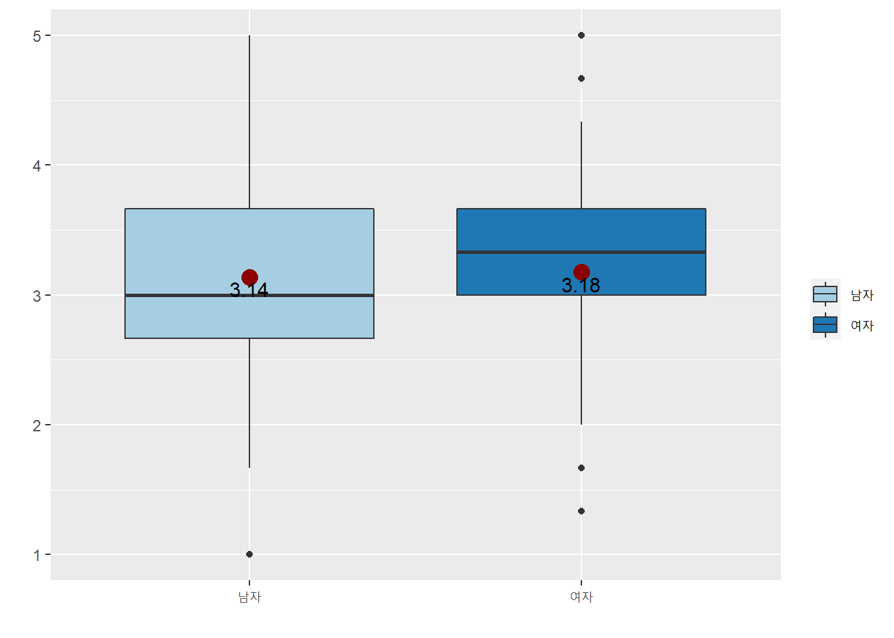
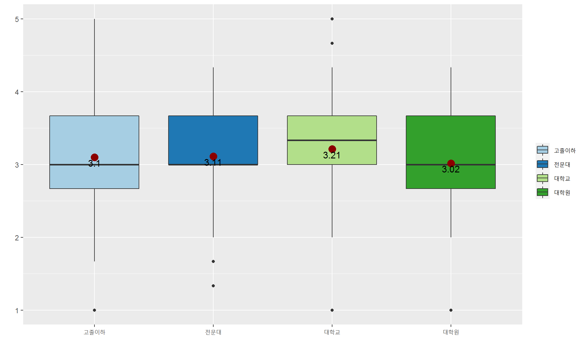

head(DATA)## # A tibble: 6 x 105
## no q1 q2_1 q3 q4 q4_4 q5_1 q6_1 q7 q8 q9_1 q9_2 q9_3
## <dbl> <dbl> <dbl> <dbl> <dbl> <dbl> <chr> <dbl> <dbl> <dbl> <dbl> <dbl> <dbl>
## 1 2 1 43 3 4 4 구월동 10 1 2 NA NA NA
## 2 3 1 55 4 4 4 간석 40 1 1 1 NA NA
## 3 4 2 45 3 4 2 계양1 5 2 2 NA NA NA
## 4 5 2 28 1 4 4 구월 23 2 1 NA NA NA
## 5 6 2 23 1 4 6 부평동 1 2 2 NA NA NA
## 6 7 1 48 3 4 6 갈산 17 2 2 NA NA NA
## # ... with 92 more variables: q9_4 <dbl>, q9_5 <dbl>, q9_6 <dbl>, q9_7 <dbl>,
## # q9_8 <dbl>, q9_9 <dbl>, q9_9a <chr>, q10 <dbl>, q11 <dbl>, q12 <dbl>,
## # q13 <dbl>, q14 <dbl>, q15 <dbl>, q16 <dbl>, q17 <dbl>, q18 <dbl>,
## # q19 <dbl>, q20 <dbl>, q21 <dbl>, q22 <dbl>, q23 <dbl>, q24 <dbl>,
## # q25 <dbl>, q26 <dbl>, q27 <dbl>, q28 <dbl>, q29 <dbl>, q30 <dbl>,
## # q31 <dbl>, q32 <dbl>, q33 <dbl>, q34 <dbl>, q35 <dbl>, q36 <dbl>,
## # q37 <dbl>, q38 <dbl>, q39 <dbl>, q40 <dbl>, q41 <dbl>, q42 <dbl>, ...names(DATA)## [1] "no" "q1" "q2_1" "q3" "q4" "q4_4" "q5_1" "q6_1"
## [9] "q7" "q8" "q9_1" "q9_2" "q9_3" "q9_4" "q9_5" "q9_6"
## [17] "q9_7" "q9_8" "q9_9" "q9_9a" "q10" "q11" "q12" "q13"
## [25] "q14" "q15" "q16" "q17" "q18" "q19" "q20" "q21"
## [33] "q22" "q23" "q24" "q25" "q26" "q27" "q28" "q29"
## [41] "q30" "q31" "q32" "q33" "q34" "q35" "q36" "q37"
## [49] "q38" "q39" "q40" "q41" "q42" "q43" "q44" "q45"
## [57] "q46" "q47" "q48" "q49" "q50" "q51" "q52" "q53"
## [65] "q54" "q55" "q56" "q57" "q58" "q59" "q60" "q61"
## [73] "q62" "q63" "q64" "q65" "q66" "q67" "q68" "q69"
## [81] "q70" "q71" "q72" "q73" "q74" "q75" "q76" "q77"
## [89] "q78" "q79" "q80" "q81" "q82" "q83" "q84" "q85"
## [97] "q85_3" "q86" "q87" "q87_12" "q88" "q88_1" "q89" "q89_1"
## [105] "q90_1"dim(DATA)## [1] 563 105Dataset_sub <- subset(DATA,select=c(q1,q3,q7,q84,q85,q86,q88_1,q89,q10,
q11,q12,q23,q24,q25,q48,q49,
q50,q72,q73,q74,q83))str(Dataset_sub)## tibble [563 x 21] (S3: tbl_df/tbl/data.frame)
## $ q1 : num [1:563] 1 1 2 2 2 1 2 2 2 2 ...
## $ q3 : num [1:563] 3 4 3 1 1 3 3 3 3 3 ...
## $ q7 : num [1:563] 1 1 2 2 2 2 2 1 2 1 ...
## $ q84 : num [1:563] 3 4 3 2 2 1 1 3 1 1 ...
## $ q85 : num [1:563] 2 2 2 1 1 2 2 1 2 2 ...
## $ q86 : num [1:563] 5 3 6 3 2 5 2 2 5 4 ...
## $ q88_1: num [1:563] 2 NA NA NA NA NA NA NA NA NA ...
## $ q89 : num [1:563] 2 2 2 1 2 2 2 1 2 2 ...
## $ q10 : num [1:563] 4 4 4 4 3 3 1 4 4 4 ...
## $ q11 : num [1:563] 4 5 3 3 2 4 1 4 4 4 ...
## $ q12 : num [1:563] 4 5 4 3 2 4 1 4 4 3 ...
## $ q23 : num [1:563] 4 2 3 4 3 1 3 3 4 4 ...
## $ q24 : num [1:563] 3 3 2 2 1 1 3 3 4 3 ...
## $ q25 : num [1:563] 4 3 2 3 1 1 3 3 4 3 ...
## $ q48 : num [1:563] 4 3 2 3 2 2 3 2 3 3 ...
## $ q49 : num [1:563] 4 3 2 3 1 1 3 2 3 3 ...
## $ q50 : num [1:563] 4 1 2 3 2 2 3 2 3 3 ...
## $ q72 : num [1:563] 3 2 1 3 2 3 3 2 4 3 ...
## $ q73 : num [1:563] 4 3 2 3 2 3 3 2 4 3 ...
## $ q74 : num [1:563] 4 3 2 4 2 2 3 2 4 4 ...
## $ q83 : num [1:563] 1 1 2 1 2 1 2 2 1 2 ...summary(Dataset_sub)## q1 q3 q7 q84
## Min. :1.000 Min. :1.000 Min. :1.000 Min. :1.000
## 1st Qu.:1.000 1st Qu.:2.000 1st Qu.:1.000 1st Qu.:2.000
## Median :2.000 Median :3.000 Median :1.000 Median :3.000
## Mean :1.503 Mean :2.641 Mean :1.421 Mean :2.512
## 3rd Qu.:2.000 3rd Qu.:4.000 3rd Qu.:2.000 3rd Qu.:3.000
## Max. :2.000 Max. :5.000 Max. :2.000 Max. :4.000
##
## q85 q86 q88_1 q89
## Min. :1.000 Min. :1.000 Min. : 1.00 Min. :1.000
## 1st Qu.:1.000 1st Qu.:3.000 1st Qu.: 1.00 1st Qu.:2.000
## Median :2.000 Median :4.000 Median : 2.00 Median :2.000
## Mean :1.607 Mean :4.146 Mean : 2.55 Mean :1.794
## 3rd Qu.:2.000 3rd Qu.:5.000 3rd Qu.: 3.00 3rd Qu.:2.000
## Max. :3.000 Max. :9.000 Max. :30.00 Max. :2.000
## NA's :1 NA's :454 NA's :1
## q10 q11 q12 q23
## Min. :1.000 Min. :1.000 Min. :1.000 Min. :1.000
## 1st Qu.:3.000 1st Qu.:3.000 1st Qu.:3.000 1st Qu.:3.000
## Median :4.000 Median :4.000 Median :4.000 Median :3.000
## Mean :3.599 Mean :3.394 Mean :3.538 Mean :3.229
## 3rd Qu.:4.000 3rd Qu.:4.000 3rd Qu.:4.000 3rd Qu.:4.000
## Max. :5.000 Max. :5.000 Max. :5.000 Max. :5.000
##
## q24 q25 q48 q49
## Min. :1.000 Min. :1.000 Min. :1.000 Min. :1.000
## 1st Qu.:3.000 1st Qu.:3.000 1st Qu.:3.000 1st Qu.:3.000
## Median :3.000 Median :3.000 Median :3.000 Median :3.000
## Mean :2.986 Mean :3.263 Mean :3.066 Mean :3.052
## 3rd Qu.:3.000 3rd Qu.:4.000 3rd Qu.:4.000 3rd Qu.:4.000
## Max. :5.000 Max. :5.000 Max. :5.000 Max. :5.000
##
## q50 q72 q73 q74 q83
## Min. :1.000 Min. :1.000 Min. :1.000 Min. :1.0 Min. :1.00
## 1st Qu.:3.000 1st Qu.:3.000 1st Qu.:3.000 1st Qu.:3.0 1st Qu.:1.00
## Median :3.000 Median :3.000 Median :3.000 Median :3.0 Median :2.00
## Mean :3.098 Mean :3.112 Mean :3.265 Mean :3.3 Mean :1.52
## 3rd Qu.:4.000 3rd Qu.:4.000 3rd Qu.:4.000 3rd Qu.:4.0 3rd Qu.:2.00
## Max. :5.000 Max. :5.000 Max. :5.000 Max. :5.0 Max. :2.00
## DATA=Dataset_subDATA$q1 <- factor(DATA$q1, labels=c('남자','여자'))
DATA$q3 <- factor(DATA$q3, labels=c('20대','30대','40대', '50대','60대'))
DATA$q7 <- factor(DATA$q7, labels=c('예','아니오'))
DATA$q84 <- factor(DATA$q84, labels=c('고졸이하','전문대', '대학교','대학원'))
DATA$q85 <- factor(DATA$q85, labels=c('미혼','기혼','기타'))
DATA$q86 <- factor(DATA$q86, labels=c('100만원미만','100만원대',
'200만원대','300만원대','400만원대',
'500만원대','600만원대','700만원대',
'800만원이상'))
DATA$q89 <- factor(DATA$q89, labels=c('있다','없다'))
DATA$q83 <- factor(DATA$q83, labels=c('예','아니오'))names(DATA)## [1] "q1" "q3" "q7" "q84" "q85" "q86" "q88_1" "q89" "q10"
## [10] "q11" "q12" "q23" "q24" "q25" "q48" "q49" "q50" "q72"
## [19] "q73" "q74" "q83"Dataset_cate <- subset(DATA,select=c(q1,q3,q7,q84,q85,q86,q89,q83))summarytools::freq(Dataset_cate, plain.ascii = FALSE)## ### Frequencies
## #### Dataset_cate$q1
## **Type:** Factor
##
## Freq % Valid % Valid Cum. % Total % Total Cum.
## ------------ ------ --------- -------------- --------- --------------
## **남자** 280 49.73 49.73 49.73 49.73
## **여자** 283 50.27 100.00 50.27 100.00
## **\<NA\>** 0 0.00 100.00
## **Total** 563 100.00 100.00 100.00 100.00
##
## #### Dataset_cate$q3
## **Type:** Factor
##
## Freq % Valid % Valid Cum. % Total % Total Cum.
## ------------ ------ --------- -------------- --------- --------------
## **20대** 135 23.98 23.98 23.98 23.98
## **30대** 134 23.80 47.78 23.80 47.78
## **40대** 135 23.98 71.76 23.98 71.76
## **50대** 116 20.60 92.36 20.60 92.36
## **60대** 43 7.64 100.00 7.64 100.00
## **\<NA\>** 0 0.00 100.00
## **Total** 563 100.00 100.00 100.00 100.00
##
## #### Dataset_cate$q7
## **Type:** Factor
##
## Freq % Valid % Valid Cum. % Total % Total Cum.
## ------------ ------ --------- -------------- --------- --------------
## **예** 326 57.90 57.90 57.90 57.90
## **아니오** 237 42.10 100.00 42.10 100.00
## **\<NA\>** 0 0.00 100.00
## **Total** 563 100.00 100.00 100.00 100.00
##
## #### Dataset_cate$q84
## **Type:** Factor
##
## Freq % Valid % Valid Cum. % Total % Total Cum.
## -------------- ------ --------- -------------- --------- --------------
## **고졸이하** 112 19.89 19.89 19.89 19.89
## **전문대** 91 16.16 36.06 16.16 36.06
## **대학교** 320 56.84 92.90 56.84 92.90
## **대학원** 40 7.10 100.00 7.10 100.00
## **\<NA\>** 0 0.00 100.00
## **Total** 563 100.00 100.00 100.00 100.00
##
## #### Dataset_cate$q85
## **Type:** Factor
##
## Freq % Valid % Valid Cum. % Total % Total Cum.
## ------------ ------ --------- -------------- --------- --------------
## **미혼** 226 40.21 40.21 40.14 40.14
## **기혼** 331 58.90 99.11 58.79 98.93
## **기타** 5 0.89 100.00 0.89 99.82
## **\<NA\>** 1 0.18 100.00
## **Total** 563 100.00 100.00 100.00 100.00
##
## #### Dataset_cate$q86
## **Type:** Factor
##
## Freq % Valid % Valid Cum. % Total % Total Cum.
## ----------------- ------ --------- -------------- --------- --------------
## **100만원미만** 50 8.88 8.88 8.88 8.88
## **100만원대** 74 13.14 22.02 13.14 22.02
## **200만원대** 116 20.60 42.63 20.60 42.63
## **300만원대** 93 16.52 59.15 16.52 59.15
## **400만원대** 92 16.34 75.49 16.34 75.49
## **500만원대** 70 12.43 87.92 12.43 87.92
## **600만원대** 30 5.33 93.25 5.33 93.25
## **700만원대** 16 2.84 96.09 2.84 96.09
## **800만원이상** 22 3.91 100.00 3.91 100.00
## **\<NA\>** 0 0.00 100.00
## **Total** 563 100.00 100.00 100.00 100.00
##
## #### Dataset_cate$q89
## **Type:** Factor
##
## Freq % Valid % Valid Cum. % Total % Total Cum.
## ------------ ------ --------- -------------- --------- --------------
## **있다** 116 20.64 20.64 20.60 20.60
## **없다** 446 79.36 100.00 79.22 99.82
## **\<NA\>** 1 0.18 100.00
## **Total** 563 100.00 100.00 100.00 100.00
##
## #### Dataset_cate$q83
## **Type:** Factor
##
## Freq % Valid % Valid Cum. % Total % Total Cum.
## ------------ ------ --------- -------------- --------- --------------
## **예** 270 47.96 47.96 47.96 47.96
## **아니오** 293 52.04 100.00 52.04 100.00
## **\<NA\>** 0 0.00 100.00
## **Total** 563 100.00 100.00 100.00 100.00DATA$pos_eco = with(DATA,(q10+q11+q12)/3) # 긍정적 경제효과
DATA$pos_soc = with(DATA,(q23+q24+q25)/3) # 긍정적 사회효과
DATA$percept = with(DATA,(q48+q49+q50)/3) # 개발인지
DATA$support = with(DATA,(q72+q73+q74)/3) # 개발지지meanFunction <- function(x){return(data.frame(y=round(mean(x),2), label=round(mean(x,na.rm=T),2)))}DATA$x1=DATA$q1; DATA$x2=DATA$pos_socggplot(DATA, aes(x = x1, y = x2, group = x1)) +
geom_boxplot(aes(fill=x1), position = position_dodge(width=0.9)) +
xlab(' ') + # x축 이름설정
ylab(' ') + # y축 이름설정
scale_fill_brewer(name = ' ', palette = 'Paired') + # 색인이름 설정
stat_summary(fun.y = mean, geom="point",colour="darkred", size=4) +
stat_summary(fun.data = meanFunction, geom="text", size = 4, vjust=1.3)## Warning: `fun.y` is deprecated. Use `fun` instead.
var.test(DATA$x2 ~ DATA$x1)##
## F test to compare two variances
##
## data: DATA$x2 by DATA$x1
## F = 1.3312, num df = 279, denom df = 282, p-value = 0.01685
## alternative hypothesis: true ratio of variances is not equal to 1
## 95 percent confidence interval:
## 1.052946 1.683129
## sample estimates:
## ratio of variances
## 1.331157t.test(DATA$x2 ~ DATA$x1, var.equal=T)##
## Two Sample t-test
##
## data: DATA$x2 by DATA$x1
## t = -0.7256, df = 561, p-value = 0.4684
## alternative hypothesis: true difference in means between group 남자 and group 여자 is not equal to 0
## 95 percent confidence interval:
## -0.14734712 0.06785023
## sample estimates:
## mean in group 남자 mean in group 여자
## 3.139286 3.179034t.test(DATA$x2 ~ DATA$x1, var.equal=F)##
## Welch Two Sample t-test
##
## data: DATA$x2 by DATA$x1
## t = -0.72505, df = 548.23, p-value = 0.4687
## alternative hypothesis: true difference in means between group 남자 and group 여자 is not equal to 0
## 95 percent confidence interval:
## -0.14743417 0.06793728
## sample estimates:
## mean in group 남자 mean in group 여자
## 3.139286 3.179034meanFunction <- function(x){
return(data.frame(y=round(mean(x),2),label=round(mean(x,na.rm=T),2)))}DATA$x1=Dataset_cate$q84; DATA$x2=DATA$pos_socggplot(DATA, aes(x = x1, y = x2, group = x1)) +
geom_boxplot(aes(fill=x1), position = position_dodge(width=0.9)) +
xlab(' ') + # x축 이름설정
ylab(' ') + # y축 이름설정
scale_fill_brewer(name = ' ', palette = 'Paired') + # 색인이름 설정
stat_summary(fun.y = mean, geom="point",colour="darkred", size=4) +
stat_summary(fun.data = meanFunction, geom="text", size = 4, vjust=1.3)## Warning: `fun.y` is deprecated. Use `fun` instead.
bartlett.test(x2 ~ x1, data=DATA)##
## Bartlett test of homogeneity of variances
##
## data: x2 by x1
## Bartlett's K-squared = 5.2337, df = 3, p-value = 0.1555round(tapply(DATA$x2, DATA$x1, mean),3)## 고졸이하 전문대 대학교 대학원
## 3.101 3.114 3.210 3.017round(tapply(DATA$x2, DATA$x1, sd),3)## 고졸이하 전문대 대학교 대학원
## 0.672 0.567 0.647 0.755anova<-aov(x2 ~ x1, data=DATA)
summary(anova)## Df Sum Sq Mean Sq F value Pr(>F)
## x1 3 2.22 0.7395 1.76 0.154
## Residuals 559 234.95 0.4203post<-TukeyHSD(anova); post## Tukey multiple comparisons of means
## 95% family-wise confidence level
##
## Fit: aov(formula = x2 ~ x1, data = DATA)
##
## $x1
## diff lwr upr p adj
## 전문대-고졸이하 0.01236264 -0.22339845 0.2481237 0.9991189
## 대학교-고졸이하 0.10922619 -0.07417903 0.2926314 0.4174553
## 대학원-고졸이하 -0.08452381 -0.39223026 0.2231826 0.8939993
## 대학교-전문대 0.09686355 -0.10159921 0.2953263 0.5903603
## 대학원-전문대 -0.09688645 -0.41379851 0.2200256 0.8600157
## 대학원-대학교 -0.19375000 -0.47390610 0.0864061 0.2830464oneway.test(x2 ~ x1,data=DATA,var.equal=FALSE) # 정규분포는 하나 등분산은 아닐 때##
## One-way analysis of means (not assuming equal variances)
##
## data: x2 and x1
## F = 1.6016, num df = 3.00, denom df = 136.26, p-value = 0.1919